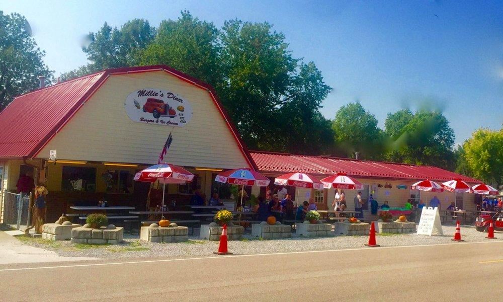
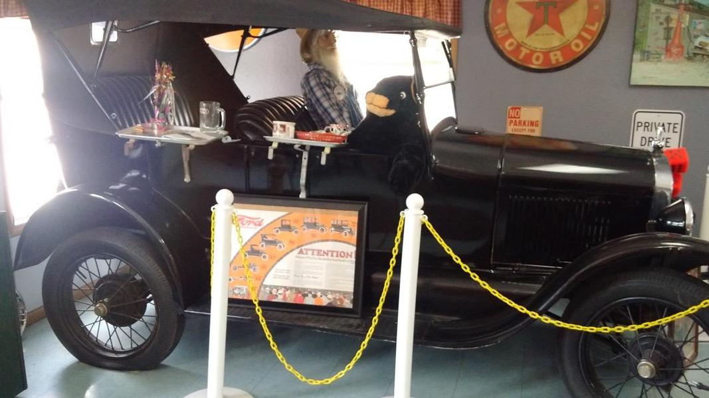
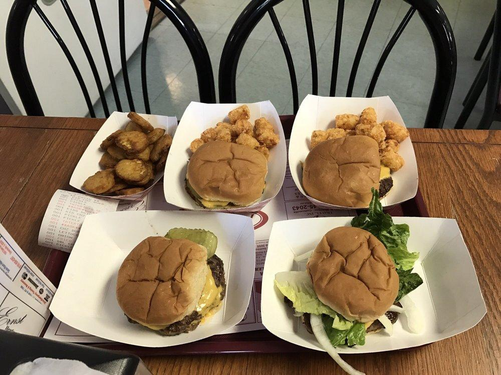
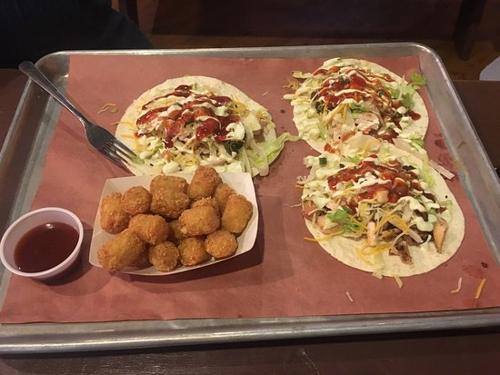
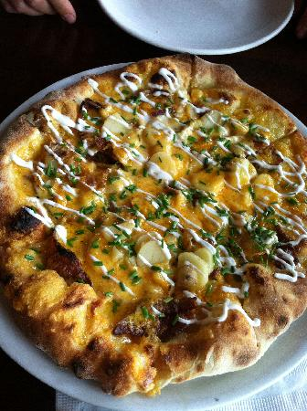
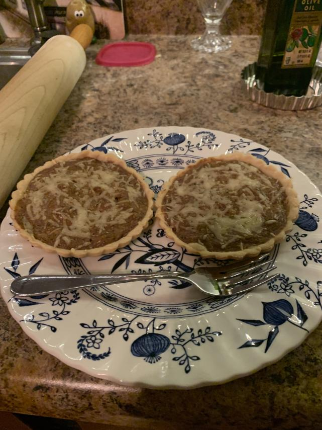

I had experimented with cooking with cooking before I got my first job, but it tended to end in disaster.
Even so, I enjoyed it and I wanted to get better. When I was 17 I got a job at a resturant the next town over, Millie's diner.

It was my first job, and I really enjoyed it. Both of the owners, Millie and Junior,
were very active in the day to day operations of the store despite being in their mid 80s.
Their passion showed in the way they maintained the resturant, it's food quality, and the staff.
The resturant was decorated like a 1950s gas station resturant, complete with one of the Junior's Model T's in the back dining area
The dummy they put in the driver's seat always creeped me out

The menu was mostly homemade fried food, burgers and (subpar) pizzas, but there was a daily special as well.
Millie instructed me for about two months on how to prep and cook every aspect of the menu. She then relaxed and trusted me with the kitchen
when I could fry everything to temp without using a thermometer and I could cook a full grill of 24 burgers and have them come out a uniform quality.
Here is an example of the food that I cooked ↓

People say flipping burgers is easy, but it was hard! The town only had 900 or so people, but it felt like they all stopped
by every weekend. I got a lot of repitition in on the dishes we had on the menu. They were simple, but they provide the
foundation for my cooking skill today. As a purely home cook, it is hard to get in the amount of practice you need,
because you won't be able to eat all of the food you cook. I'm grateful to have the basic foundation of cooking by eye that
Millie gave me.
Unfortunatly, time claim us all, and during the second year that I worked there Junior died of a heart attack.
Millie didn't have the heart to keep the resturant running, leaving me to find a new job.
Fire-N-Smoke
I then started working at a BBQ resturant called Fire-N-Smoke. They had a variety of smoked meats on the menu, as well as
tacos, burgers, the best mac-n-cheese ever, nachoes, and salads. I started work on the burger grill, as I already had experience with it, and because
the guy who used to do it had just quit. The prep work at Fire-N-Smoke was a lot more hands-on than Millie's was. They
cut everything by hand, and they had a lot more variety to the vegetables that needed to be cut. I eventually started doing
tacos and salads as well as the grill, which meant a lot of that prep fell on me
Some yummy turkey tacos. These were the least 'BBQ' of the ones we had

The prep work did my knife skills good, and I began to learn how to cut things the safe, quick and proper way.
I lean on a lot of the skills I learned there today. Unfortunatly, many of the people that worked there alongside me had problems
with drugs or alcohol or both. It wasn't a good environment to be in, so I quit and took a break from kitchen work for a year and a half
to work in manufacturing.
Peel Pizza
When the pandemic hit, I was laid off work because the factory that I'd worked at had closed. I stayed unemployed through the first months of COVID, but when I started to run out of money, I decided to get a job at a gourmet pizza resturant because they never closed.
I monstly started out making the salads and plating the rolls for appetizers, but I was given an oppertunity to use the wood fired oven early on, and I ran with it.
It is very fun and satsfying to have to juggle an entire flame filled oven filled with food, and still have it come out perfectly cooked. Learning how to work a wood fired pizza oven is a bit of a niche skill though, so I made sure that they moved me all around the kitchen as much
as possible. My second favorite thing to work at peel was the hot entree station. They got to make pastas, burgers, shrimps, fried food, and certain appetizers. Working it night was just okay, but when they made me come in on weekends to do brunch (always a clopen), I always worked the
entree station making breakfast foods, which I loved to do. I got very good at making omlettes and being able to flip the food in the pan without a utenisil, which was always a little goal of mine.
The food at peel was by far the best of any resturant that I've worked in. This is a bacon potato pizza

I liked working at peel overall, and it did hone my technique, and it developed my palate and my sense of which ingredients fit together, even if they don't seem it at first. However, the head chef was a massive sexist to my friend, and the owners wouldn't do anything to stop it, which is pathetically common in kitchens.
That, coupled with the low pay, long and irregular hours, and the fact that they would have me close at 11pm and have me come back and open the store at 7am, made me decide to re-evaluate and leave the industy. I have a lot of passion for the work, but I think that that is exploited for financial gain
at the vast majority of resturants.
The present and beyond
Even though I decided to leave the industry, that doesnt mean that I have stopped cooking or caring about making tasty food. I still love to cook at home, for myself, my girlfriend and friends, and my neighbors. Now that I am free to create what I want, how I want, and when I want,
I am enjoying the cooking process much more. I have recently got into making homemade bread, and baking in general, thanks to watching the Great British Bake off. I'm not a big fan of making deserts, but I do like to explore savory baking, which i feel is not as common as it should be.
This is a caramelized onion and gruyère custard tart that I made for my girlfriend
